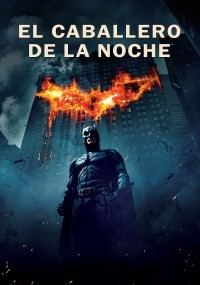
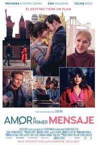
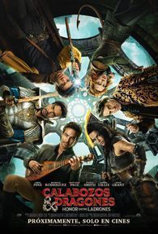
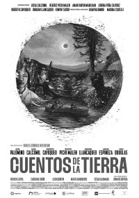
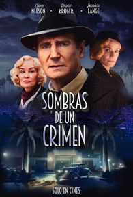
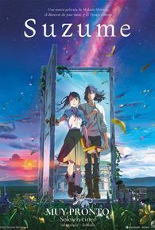

☰
INICIO
HORARIOS
REGISTRARSE
EN CARTELERA

PRÓXIMAMENTE






. Ashikata se debatirá entre ambos bandos para establecer un balance y evitar que se desencadene una masacre.")

Género: Animación
Duración: 93min
Actores: Anya Taylor-Joy, Charlie Day, Chris Pratt
Director: Aaron Horvath, Michael Jelenic
De Nintendo e Illumination llega una nueva película animada basada en el mundo de Super Mario Bros. Dirigida por Aaron Horvath y Michael Jelenic de un guion de Matthew Fogel, la película es protagonizada por Chris Pratt como Mario, Anya Taylor-Joy como la Princesa Peach, Charlie Day como Luigi, Jack Black como Bowser, Keegan-Michael Key como Toad, Seth Rogen como Donkey Kong, Fred Armisen como Cranky Kong, Kevin Michael Richardson como Kamek y Sebastian Maniscalco como Spike.")